简介
说道类加载器可能大家第一反应就是啊这个东西我没有接触过很难，而且一般情况下对于app开发应用也用不到类加载器，但是对于框架开发者来说类加载器就是家常便饭一样，那类加载器到底是什么东西，真的难道我们都不敢接触了吗？下面就听菜鸟给你慢慢解答！我会通过小标题的方式一步步让大家理解最终的答案因为小标题是理解最终答案的基础
什么是类加载？
jvm(java虚拟机)将xx.class文件读取到内存中，对其进行校验、解析、初始化最终在内存中(jvm的堆和方法区)形成可以直接被jvm使用的类型的过程，这个过程就是类的加载。
什么样的文件可以被jvm加载？
有且仅有一种文件就是后缀名是.class的文件，那么可能有人问，我写的java文件都是.java呀，为什么它就可以执行?
因为编译工具将.java转换成了jvm可执行的.class文件，如果你用的不是java语法可能使用的是jython或者其他语言也只要能将其转化成.class那就可以被jvm加载。至于加载后能不能被使用，那就要看后面那些验证准备等等步骤了。
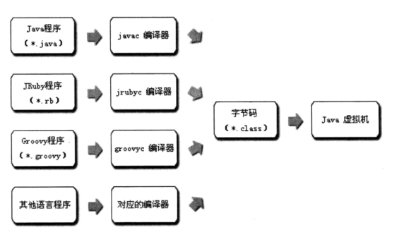
JVM运行时内存区域如何划分？
注意是运行时内存是如何划分。如果还没有运行，只是.class文件，那就谈不上运行时内存的划分。
- 栈
- 堆
- 本地方法栈
- 程序计数器
- 方法区
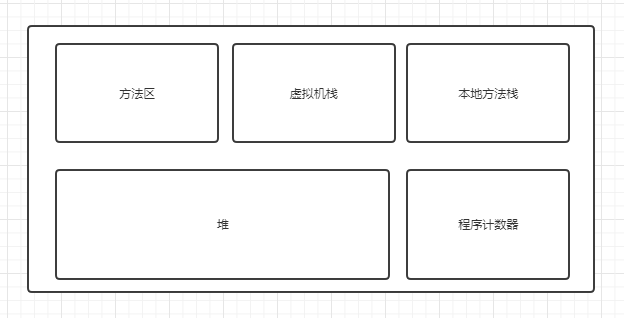
之前我也只是死记硬背，这些东西。因为校招会考，但是现在理解了，.class文件只是一个文件而已，它也是通过流加载到内存中，但是jvm会按照约定的格式把它转化成对应的数据结构。比如如下这种就是简单的反编译.class文件，它会根据指定的这种结构，然后对应到内存中的一种数据结构。

怎么从一个.class对象成为jvm可以使用的对象？
-
加载
- 类加载器通过类的全路径限定名读取类的二进制字节流
- 将二进制字节流代表的类结构转化到运行时数据区的 方法区中
- 在jvm堆中生成代表这个类的java.lang.Class实例作为对方法区中这些数据的访问入口
这个阶段已经生成了Class对象用来描述这个类文件了。just描述，并没有给类中变量方法等等分配内存。
切记！ -
验证
- 文件格式的验证
- 文件格式的验证
- 元数据的验证
- 字节码验证和符号引用验证
验证这个阶段目的是为了确保Class文件中的字节流包含的信息符合当前虚拟机的要求。而且不会危害虚拟机自身的安全。不同的虚拟机对类验证的实现可能会有所不同
- 文件格式的验证
-
准备
准备阶段给类
变量分配内存并且设置类变量初始值的阶段，注意这些内存都将在方法区中分配。- 只是对类的静态变量(static)修饰的变量
- 这里设置初始化的值是一些固定的值包括：0、0L、null、false并不是在代码中被显式赋的值
-
解析
解析阶段是虚拟机将常量池中的符号引用转化为直接引用的过程，解析动作主要针对类或接口、字段、类方法、接口方法四类符号引用进行。
- 类或接口的解析
- 字段解析
-
初始化
jvm规定只有四种情况下触发初始化
- 遇到new、getstatic、putstatic、invokestatic这四条字节码指令时，如果类还没有进行过初始化，则需要先触发其初始化，通俗的说：
- 使用new关键字实例化对象时
读取或设置一个类的静态字段（static）时被static修饰又被final修饰的，已在编译期把结果放入常量池的静态字段除外- 以及调用一个类的静态方法时
但是我们要注意：
- 对于静态字段，只有直接定义这个字段的类才会被初始化，因此，通过其子类来引用父类中定义的静态字段，只会触发父类的初始化而不会触发子类的初始化。
- 常量在编译阶段会存入调用它的类的常量池中，本质上没有直接引用到定义该常量的类，因此不会触发定义常量的类的初始化。
.class文件的格式如何，都包含哪些内容？
class文件是一组以8个字节为基础单位的二进制流，只有两种数据结构：无符号数，表
- 无符号数：u1,u2,u4,u8
- 表结构：多个无符号数组成
对应的数据结构是这样的：
1 | ClassFile { |
常量池
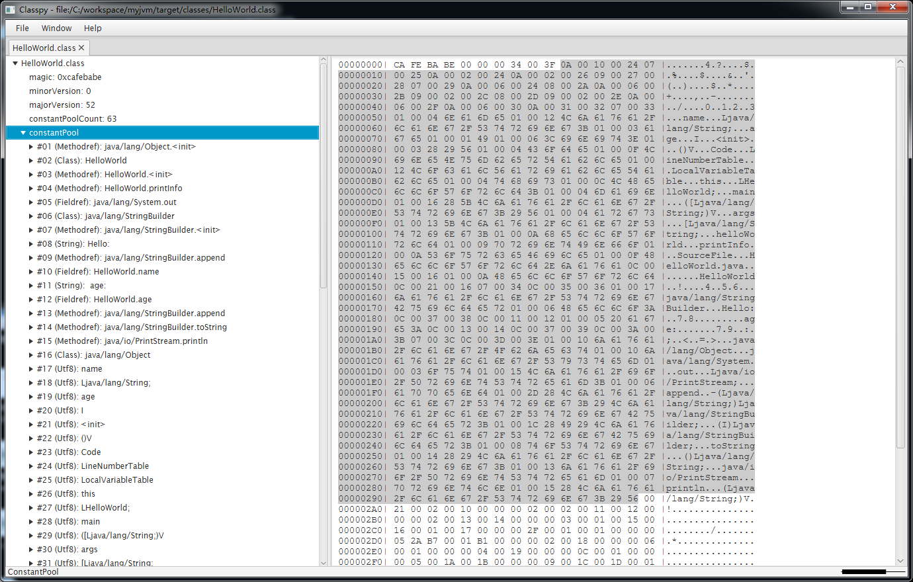
常量池中定义了大量的常量。也不能说是常量池，只能说是对常量的描述，因为只有在运行时候对应的数据结构才叫做常量池哈哈，感觉有点抠字眼了。
类的访问标志
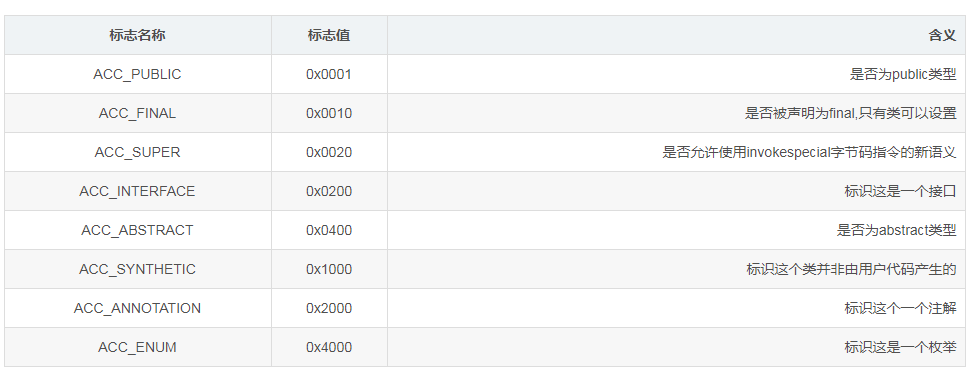
字段表
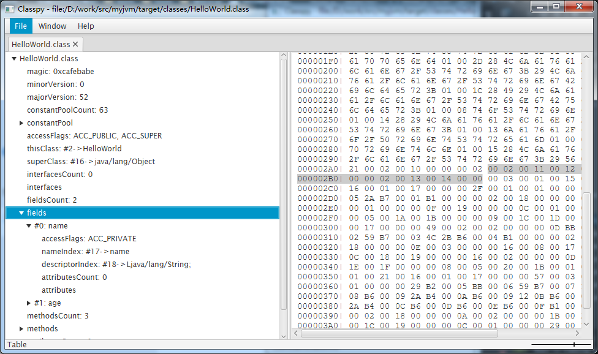
既然频繁出现accessFlags我们看看究竟是啥，我用网上一个博主的图片解释
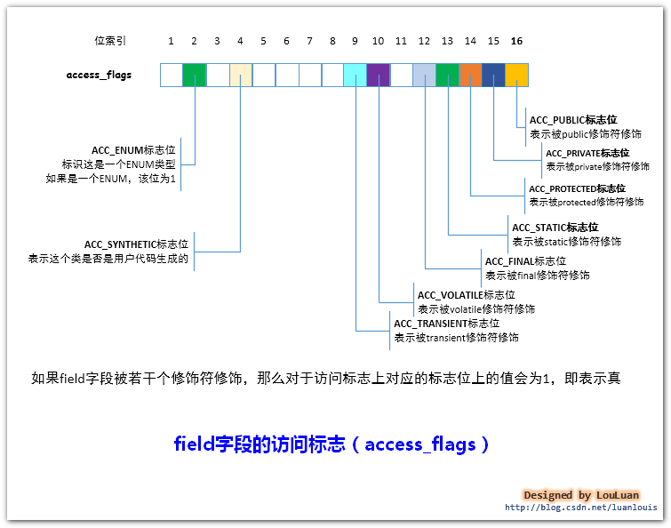
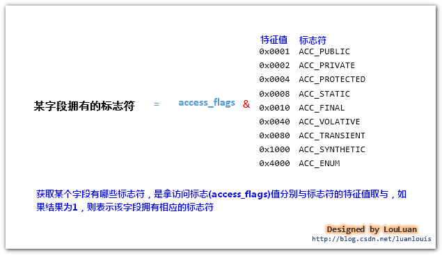
nameIndex 字段的简单名字
descriptorIndex 字段或方法描述符
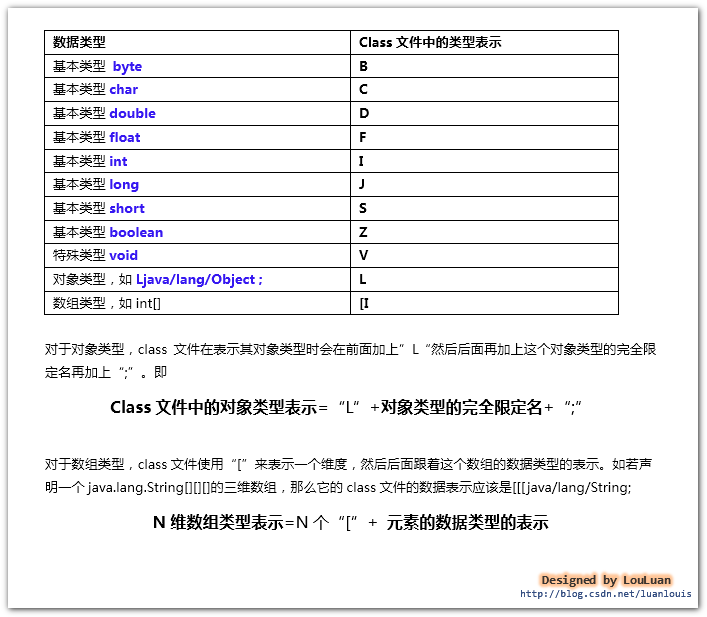
方法
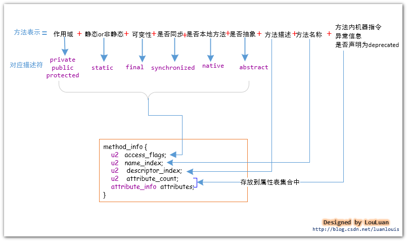
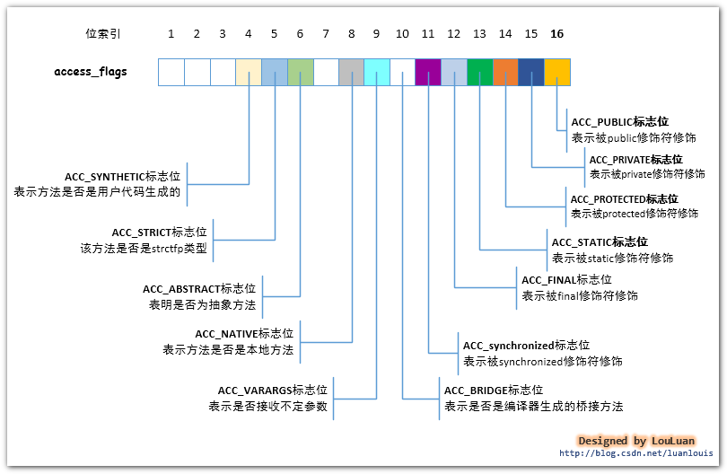
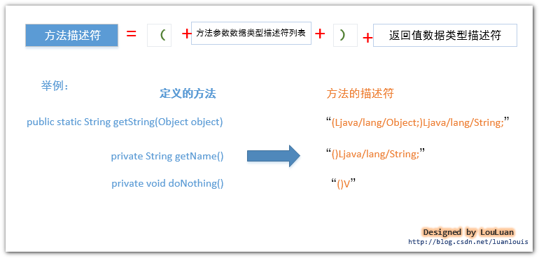
- 全限定名是指形如”com/lzw/jvm/TestClass”，仅仅把类全面的”.”替换为”/”并以”;”结束
- 简单名称是指没有参数类型和参数修饰的方法或者字段名称，例如main()方法的简称是main，name字段的简称是name
为什么要配置java环境变量？
当初学java的时候，我比较笨，一个环境变量配了三天才好，但是比较好一点就是幸好我坚持下来了，虽然是三天，但是我坚持完成了，如果当初不配置完放弃的话可能我也走不到软件这个行业了哈哈。当时就在想为啥要配置这玩意，学c语言的时候就没配置直接可以运行程序呀。那我们就先回顾下配置环境变量如何配？然后在说说配置干啥？
JAVA_HOME
1 | C:\Program Files\Java\jdk1.7 |
PATH
1 | PATH=%JAVA_HOME%\bin;%JAVA_HOME%\jre\bin;%PATH%; |
CLASSPATH
1 | CLASSPATH=.;%JAVA_HOME%\lib;%JAVA_HOME%\lib\tools.jar |
其实配置这些环境变量就是为了让我们可以使用那些指定目录下的工具代码，比如javac，java等等这些命令使用那些工具就是在这目录下的执行程序。
什么是java类加载器
顾名思义，类加载器（class loader）用来加载 Java 类到 Java 虚拟机中。一般来说，Java 虚拟机使用 Java 类的方式如下：Java 源程序（.java 文件）在经过 Java 编译器编译之后就被转换成 Java 字节代码（.class 文件）。类加载器负责读取 Java 字节代码，并用 对应的java.lang.Class类进行描述。每个这样的实例用来表示一个 Java 类。通过此实例的 newInstance()方法就可以创建出该类的一个对象。
类加载器中的核心方法介绍
| 方法 | 说明 |
|---|---|
| getParent() | 返回该类加载器的父类加载器。 |
| loadClass(String name) | 加载名称为 name的类，返回的结果是 java.lang.Class类的实例。 |
| findClass(String name) | 查找名称为 name的类，返回的结果是 java.lang.Class类的实例。 |
| findLoadedClass(String name) | 查找名称为 name的已经被加载过的类，返回的结果是 java.lang.Class类的实例。 |
| defineClass(String name, byte[] b, int off, int len) | 把字节数组 b中的内容转换成 Java 类，返回的结果是 java.lang.Class类的实例。这个方法被声明为 final的。 |
| resolveClass(Class<?> c) | 链接指定的 Java 类。 |
双亲委托模型是什么？
双亲委托模型是类加载的一种委托机制。我们直接上图
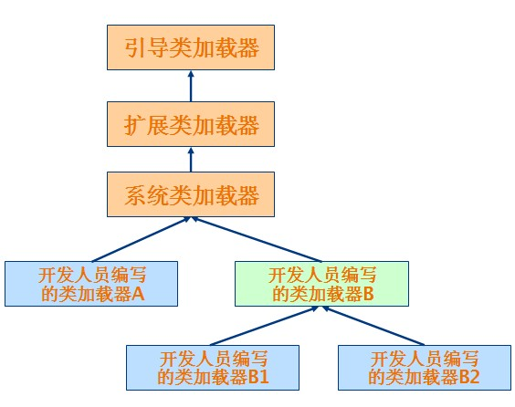
一个类加载器查找class和resource时，是通过“委托模式”进行的，它首先判断这个class是不是已经加载成功，如果没有的话它并不是自己进行查找，而是先通过父加载器，然后递归下去，直到Bootstrap ClassLoader，如果Bootstrap classloader找到了，直接返回，如果没有找到，则一级一级返回，最后到达自身去查找这些对象。这种机制就叫做双亲委托。
包含的内容有：
引导类加载器（bootstrap class loader）：它用来加载 Java 的核心库，是用原生代码来实现的，并不继承自 java.lang.ClassLoader。扩展类加载器（extensions class loader）：它用来加载 Java 的扩展库。Java 虚拟机的实现会提供一个扩展库目录。该类加载器在此目录里面查找并加载 Java 类。系统类加载器（system class loader）：它根据 Java 应用的类路径（CLASSPATH）来加载 Java 类。一般来说，Java 应用的类都是由它来完成加载的。可以通过 ClassLoader.getSystemClassLoader()来获取它。自定义类加载器开发人员可以通过继承 java.lang.ClassLoader类的方式实现自己的类加载器，以满足一些特殊的需求。
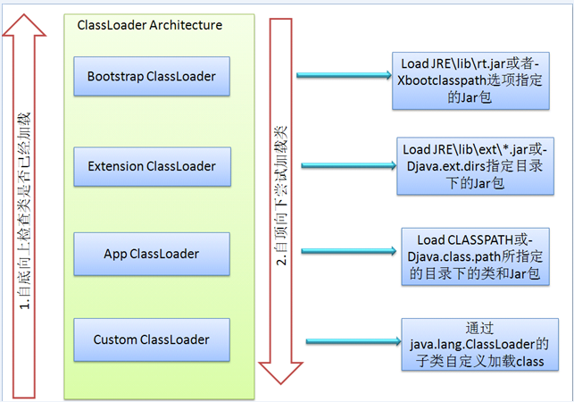
由于每个类加载器加载的区域不一样，bootstrap负责加载系统类，extclassloader负责加载扩展类，appclassloader负责加载应用类。他们主要是分工不一样，各自负责不同的区域，另外也是为了实现委托模型。什么是委托模型呢，其实就是当类加载器有加载需求的时候，先请示他的父类使用父类的搜索路径来加入，如果没有找到的话，才使用自己的搜索路径来来搜索类。
简单实现一个类加载器
1 | public class MyClassLoader extends ClassLoader { |
1 | public class ClassLoaderTest { |